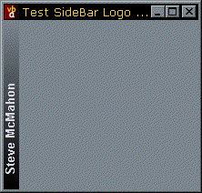

Side Logo Demonstration Project (13K)
Side Logo Demonstration Project (13K)
 Bugs: 1 / 1
Bugs: 1 / 1
 Issues: 0 / 0
Issues: 0 / 0
 Questions: 0 / 0
Questions: 0 / 0
 21 Mar 1999
21 Mar 1999
The previous version of the font code didn't take the character set into account, so you could not display symbol or international fonts correctly. Thanks to Lance Franklin for providing the fix to this code.

Text At Any Angle
Convert a VB StdFont to a GDI font, and get more control over font use.
VB doesn't provide you with any method to change the angle text is written out at on a Form or PictureBox. This seems to be a curious oversight of the OLE StdFont object, because it is in fact very simple to create a font with angles other than horizontal. This article shows you how to do it. The source code provides a class which creates a side logo bar like the one shown in the picture above, additionally demonstrating a method of drawing gradients which run between any two colours.
To create a font with a different angle, you must delve into the API world of creating fonts rather than use the StdFont object. In the API world, you build up a LOGFONT structure with information about the font, and then pass this into the CreateFontIndirect function. This returns a handle to the newly created font, which can then be selected into a Device context using the GDI SelectObject method. The LOGFONT structure is quite closely related to the standard font options we normally use, but some of the options need a bit of playing with before it works.
Private Type LOGFONT
lfHeight As Long ' The font size (see below)
lfWidth As Long ' Normally you don't set this, just let Windows create the default
lfEscapement As Long ' The angle, in 0.1 degrees, of the font
lfOrientation As Long ' Leave as default
lfWeight As Long ' Bold, Extra Bold, Normal etc
lfItalic As Byte ' As it says
lfUnderline As Byte ' As it says
lfStrikeOut As Byte ' As it says
lfCharSet As Byte ' As it says
lfOutPrecision As Byte ' Leave for default
lfClipPrecision As Byte ' Leave for default
lfQuality As Byte ' Leave as default (see end of article)
lfPitchAndFamily As Byte ' Leave as default (see end of article)
lfFaceName(LF_FACESIZE) As Byte ' The font name converted to a byte array
End Type
The main differences between this and the StdFont object are:
- Face name must be specified as a byte array rather than a string.
- The font size is specified through lfHeight. However, you can't just put the size in points here - first you have to make it negative and work out what the font size should be given the number of logical pixels per item vertically.
- The Bold option accepts a number of different settings, which normally have no effect, such as extra bold, extra light and so forth.
To make it simple to fill in this type, here is a sub which takes a StdFont object and fills a LOGFONT structure with the equivalent settings:
Private Sub pOLEFontToLogFont(fntThis As StdFont, hDC As Long, tLF As LOGFONT)
Dim sFont As String
Dim iChar As Integer
' Convert an OLE StdFont to a LOGFONT structure:
With tLF
sFont = fntThis.Name
' There is a quicker way involving StrConv and CopyMemory, but
' this is simpler!:
For iChar = 1 To Len(sFont)
.lfFaceName(iChar - 1) = CByte(Asc(Mid$(sFont, iChar, 1)))
Next iChar
' Based on the Win32SDK documentation:
.lfHeight = -MulDiv((fntThis.Size), (GetDeviceCaps(hDC, LOGPIXELSY)), 72)
.lfItalic = fntThis.Italic
If (fntThis.Bold) Then
.lfWeight = FW_BOLD
Else
.lfWeight = FW_NORMAL
End If
.lfUnderline = fntThis.Underline
.lfStrikeOut = fntThis.Strikethrough
' Fix to ensure the correct character set is selected. Otherwise you
' cannot display Wingdings or international fonts:
.lfCharset = fntThis.CharSet
End With
End Sub
Using this you can create a LOGFONT structure easily, and then set the angle. For example, here is code you could use to draw some text vertically on a form:
Dim tLF As LOGFONT
Dim hFnt As Long
Dim hFntOld As Long
' Using the form's font, create a vertical copy
pOLEFontToLogFont Me.Font, Me.hDC, tLF
tLF.lfEscapement = 900 ' This is the angle to display at x 10
hFnt = CreateFontIndirect(tLF)
' Select the font into the Form's Device context, storing the font that was already there
hFntOld = SelectObject(Me.hDC, hFnt)
' Now we can print text vertically using either VB or API methods
Me.CurrentX = 16*Screen.TwipsPerPixelX
Me.CurrentY = Me.ScaleHeight-16*Screen.TwipsPerPixelY
Me.Print "This Text is Vertical"
' Clear up the font by putting the original one back and deleting the vertical copy:
SelectObject Me.hDC, hFntOld
DeleteObject hFnt
That's all there is to it. For convenience, here are all the API declarations you will need to make the code above work:
Private Declare Function GetDeviceCaps Lib "gdi32" ( _
ByVal hDC As Long, ByVal nIndex As Long
) As Long
Private Const LOGPIXELSX = 88' Logical pixels/inch in X
Private Const LOGPIXELSY = 90' Logical pixels/inch in Y
Private Declare Function MulDiv Lib "kernel32" ( _
ByVal nNumber As Long, ByVal nNumerator As Long, ByVal nDenominator As Long _
) As Long
Private Const LF_FACESIZE = 32
Private Type LOGFONT
lfHeight As Long
lfWidth As Long
lfEscapement As Long
lfOrientation As Long
lfWeight As Long
lfItalic As Byte
lfUnderline As Byte
lfStrikeOut As Byte
lfCharSet As Byte
lfOutPrecision As Byte
lfClipPrecision As Byte
lfQuality As Byte
lfPitchAndFamily As Byte
lfFaceName(LF_FACESIZE) As Byte
End Type
Private Declare Function CreateFontIndirect Lib "gdi32" Alias "CreateFontIndirectA" ( _
lpLogFont As LOGFONT _
) As Long
Private Declare Function SelectObject Lib "gdi32" ( _
ByVal hDC As Long, ByVal hObject As Long _
) As Long
Private Declare Function DeleteObject Lib "gdi32" (ByVal hObject As Long) As Long
Private Const FW_NORMAL = 400
Private Const FW_BOLD = 700
Private Const FF_DONTCARE = 0
Private Const DEFAULT_QUALITY = 0
Private Const DEFAULT_PITCH = 0
Private Const DEFAULT_CHARSET = 1
More
There are more things you can do with this. The lfOrientation member of the LOGFONT type specifies the orientation of the characters independently of which angle the text is drawn at. To make this member work you have to call SetGraphicsMode on the DC to draw in to set the graphics mode to GM_ADVANCED:
Private Declare Function SetGraphicsMode Lib "gdi32" Alias "SetGraphicsMode" _
(ByVal hdc As Long, ByVal iMode As Long) As Long
Private Const GM_ADVANCED = 2
...
SetGraphicsMode Me.hdc, GM_ADVANCED
tLF.lfEscapement = 300 ' This is the angle to display at x 10
tLF.lfOrientation = 1200 ' Set the angle to display the characters at x 10
hFnt = CreateFontIndirect(tLF)
' Select the font into the Form's Device context, storing the font that was already there
hFntOld = SelectObject(Me.hDC, hFnt)
...
Finally, here are the values you can use for the other constants:
' lfQuality Constants:
Private Const DEFAULT_QUALITY = 0 ' Appearance of the font is set to default
Private Const DRAFT_QUALITY = 1 ' Appearance is less important that PROOF_QUALITY.
Private Const PROOF_QUALITY = 2 ' Best character quality
Private Const NONANTIALIASED_QUALITY = 3 ' Don't smooth font edges even if system is set to smooth font edges
Private Const ANTIALIASED_QUALITY = 4 ' Ensure font edges are smoothed if system is set to smooth font edges
' lfPitchAndFamilyConstants - or together one from pitch and one from family:
' Pitch:
Private Const DEFAULT_PITCH = 0
Private Const FIXED_PITCH = 1
Private Const VARIABLE_PITCH = 2
' Family:
Private Const FF_DONTCARE = 0 ' Don't care or don't know.
Private Const FF_ROMAN = 16 ' Variable stroke width, serifed.
' Times Roman, Century Schoolbook, etc.
Private Const FF_SWISS = 32 ' Variable stroke width, sans-serifed.
'Helvetica, Swiss, etc.
Private Const FF_MODERN = 48 ' Constant stroke width, serifed or sans-serifed.
' Pica, Elite, Courier, etc.
Private Const FF_SCRIPT = 64 ' Cursive, etc.
Private Const FF_DECORATIVE = 80 ' Old English, etc.
' Character sets:
Private Const ANSI_CHARSET = 0
Private Const DEFAULT_CHARSET = 1
Private Const SYMBOL_CHARSET = 2
Private Const SHIFTJIS_CHARSET = 128
Private Const HANGEUL_CHARSET = 129
Private Const HANGUL_CHARSET = 129
Private Const GB2312_CHARSET = 134
Private Const CHINESEBIG5_CHARSET = 136
Private Const OEM_CHARSET = 255
Private Const JOHAB_CHARSET = 130
Private Const HEBREW_CHARSET = 177
Private Const ARABIC_CHARSET = 178
Private Const GREEK_CHARSET = 161
Private Const TURKISH_CHARSET = 162
Private Const VIETNAMESE_CHARSET = 163
Private Const THAI_CHARSET = 222
Private Const EASTEUROPE_CHARSET = 238
Private Const RUSSIAN_CHARSET = 204
Private Const MAC_CHARSET = 77
Private Const BALTIC_CHARSET = 186